Popular Cat Breeds
Discover the unique characteristics of different cat breeds
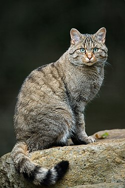
Tabby
Origin: Various
Characteristics: Distinctive striped or spotted patterns, playful, affectionate, intelligent
Temperament: Energetic and social, enjoy playtime and interaction
Care Level: Moderate
Life Span: 12-18 years
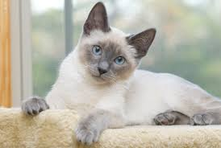
Siamese
Origin: Thailand
Characteristics: Striking blue eyes, color-point coat, vocal, social, highly intelligent
Temperament: Demanding of attention, very vocal, form strong bonds with owners
Care Level: Moderate to High
Life Span: 8-15 years
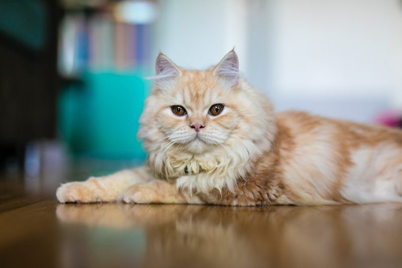
Persian
Origin: Iran
Characteristics: Luxurious long coat, flat face, calm, gentle, requires grooming
Temperament: Calm and gentle, prefer quiet environments, less active
Care Level: High (grooming intensive)
Life Span: 8-15 years
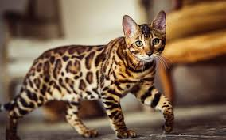
Bengal
Origin: United States
Characteristics: Wild appearance with leopard-like spots, highly active, athletic
Temperament: Very active and playful, love to climb and explore, need stimulation
Care Level: High
Life Span: 10-16 years

Maine Coon
Origin: Maine, USA
Characteristics: Large size, fluffy coat, friendly, intelligent, dog-like personality
Temperament: Gentle giants, sociable, good with families, enjoy interaction
Care Level: Moderate (grooming needed)
Life Span: 12-18 years
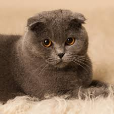
Scottish Fold
Origin: Scotland
Characteristics: Distinctive folded ears, round face, calm, affectionate
Temperament: Sweet and gentle, enjoy human company, quiet and calm
Care Level: Moderate
Life Span: 11-15 years
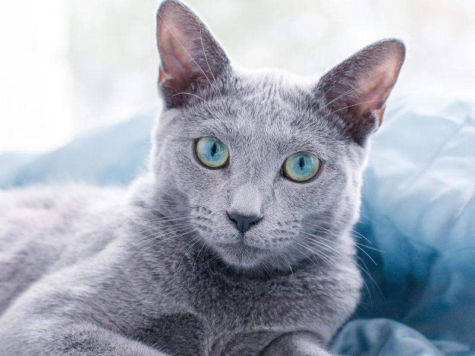
Russian Blue
Origin: Russia
Characteristics: Silver-blue coat, green eyes, elegant, shy but loving
Temperament: Reserved with strangers, very affectionate with family, enjoy quiet
Care Level: Low to Moderate
Life Span: 12-17 years
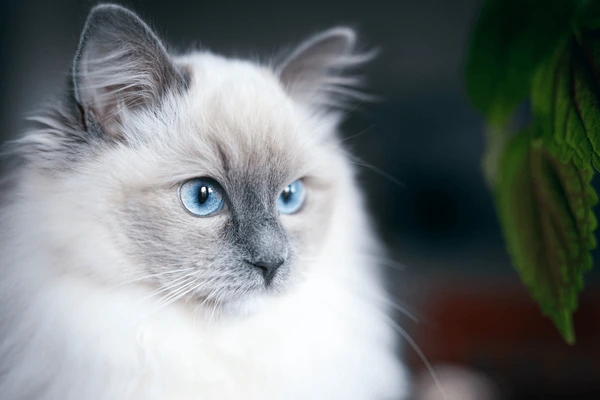
Ragdoll
Origin: United States
Characteristics: Large blue eyes, color-point coat, relaxed, gentle, calm
Temperament: Very docile and relaxed, enjoy being held, get along well with families
Care Level: Moderate (grooming needed)
Life Span: 12-17 years
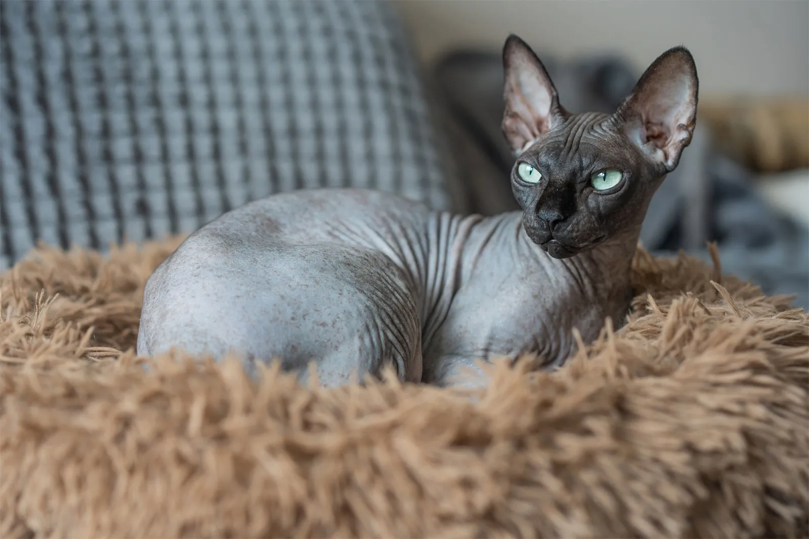
Sphynx
Origin: Canada
Characteristics: Hairless, wrinkled skin, large ears, energetic, affectionate
Temperament: Highly social, loves attention, playful, demands interaction
Care Level: High (requires regular baths and skin care)
Life Span: 8-14 years
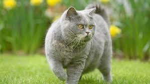
British Shorthair
Origin: United Kingdom
Characteristics: Stocky build, round face, dense short coat, calm, quiet
Temperament: Independent but affectionate, enjoy quiet environments, dignified
Care Level: Low to Moderate
Life Span: 12-17 years
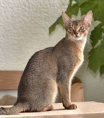
Abyssinian
Origin: Egypt
Characteristics: Slender frame, distinctive ticked coat, large ears, active, intelligent
Temperament: Highly energetic, love to climb and play, require plenty of stimulation
Care Level: Moderate
Life Span: 9-15 years
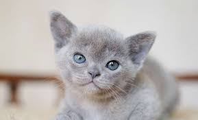
Burmese
Origin: Myanmar (Burma)
Characteristics: Silky coat, muscular build, golden or sable coloring, affectionate
Temperament: Very social and people-oriented, demanding of attention, vocal
Care Level: Low to Moderate
Life Span: 10-17 years
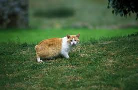
Manx
Origin: Isle of Man
Characteristics: Characteristic lack of tail, sturdy build, excellent jumpers, intelligent
Temperament: Playful and loyal, enjoy interaction, dog-like personality
Care Level: Moderate
Life Span: 8-14 years
Choosing the Right Breed
👥 Active Families
If you have an active household with plenty of interaction, consider Bengal, Maine Coon, or Tabby breeds. These cats love playtime and stimulation.
🤫 Quiet Homes
For peaceful environments, Russian Blue, Scottish Fold, or Persian cats are excellent choices. They prefer calm, stable homes.
💬 Social Cats
If you want a vocal, interactive cat, Siamese and Maine Coons are known for their chatty personalities and strong bonds with owners.
✋ Low Maintenance
For busy schedules, Tabby cats and Russian Blues require less grooming and adapt well to various living situations.
Health Considerations by Breed
Different breeds have specific health concerns. Here's what you should know:
- Siamese: Prone to respiratory issues and crossed eyes
- Persian: Facial structure can cause breathing problems; require professional grooming
- Maine Coon: Watch for hip dysplasia and heart conditions
- Bengal: Generally healthy; ensure proper socialization
- Scottish Fold: Ear infections due to folded ears; monitor regularly
- Ragdoll: Prone to kidney disease; regular vet checkups recommended
Pro Tip: Always adopt from reputable breeders or rescue organizations. Regular veterinary care is essential for all breeds!